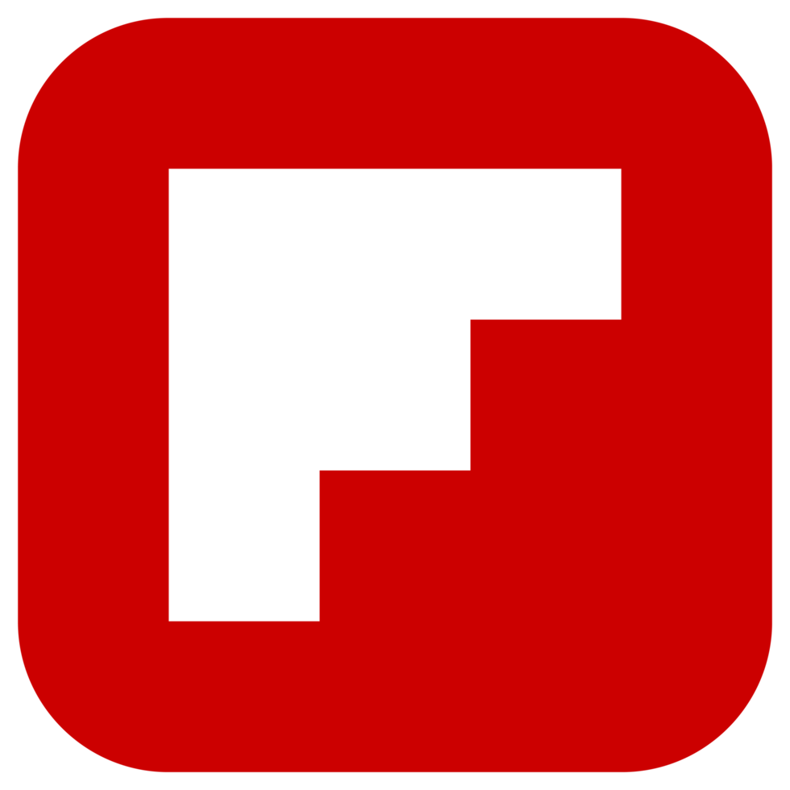
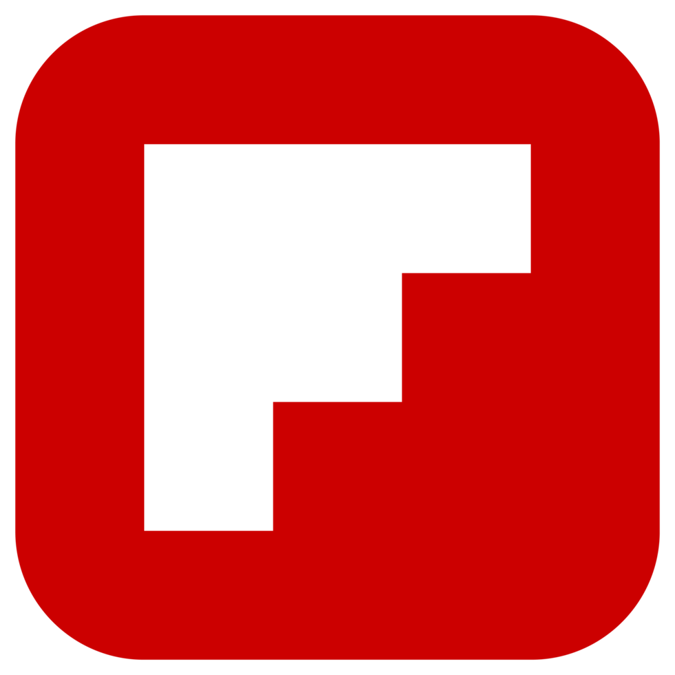

Portfolio BTS SIO option SLAM
Veille technologique
Compétences mobilisées :
- 6. Organiser son développement professionnel : Développer son projet professionnel / Mettre en œuvre des outils et stratégies de veille informationnelle
Description :
Le sujet de ma veille technologique concerne les IA aidant à coder une technique de programmation désormais appelé «vibecoding» depuis février 2025.
J’ai effectué cette veille technologique grâce à divers outils tels que les applications Feedly et Flipboard ainsi que grâce à Google Alerts.
J'ai aussi effectué diverses recherches internet concernant le sujet de ma veille.
 
